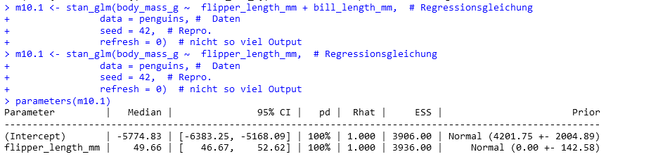
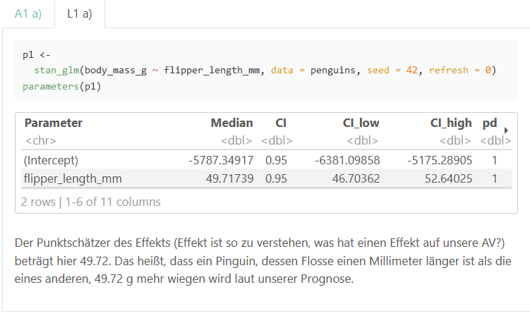

13 Abschluss
13.1 Lernsteuerung
13.1.1 Lernziele
Nach Absolvieren des jeweiligen Kapitels sollen folgende Lernziele erreicht sein.
Sie können …
- erläutern, wie Sie eine typische, sozialwissenschaftliche Forschungsfrage (quantitativ) untersuchen
- typische “Lieblingsfehler” benennen und Wege aufzeigen, um die Fehler zu umgehen
- zwischen den Grundkonzepten der Frequentististischen Statistik und der Bayes-Statistik übersetzen
- die Grundideen der Bayes-Statistik in eine Gesamtzusammenhang einordnen
13.1.2 Benötigte R-Pakete
In diesem Kapitel benötigen Sie folgende R-Pakete.
13.1.3 Begleitvideos
13.2 Probeklausur
Dieser Tag auf dem Datenwerk stellt Fragen einer Probeprüfung zusammen.
13.3 Lieblinglingsfehler
Lieblingsfehler im Überblick 🤷:
- Post-Präd-Verteilung (PPV) und Post-Verteilung verwechseln
- Quantile und Verteilungsfunktion verwechseln
- Prädiktoren nicht zentrieren, wenn es einen Interaktionsterm gibt
- Interaktion falsch interpretieren
- Regressionskoeffizienten kausal interpretieren, wenn es keine kausale Fundierung gibt
13.3.1 Post-Präd-Verteilung (PPV) und Post-Verteilung verwechseln 🤷
🏎 🏎 Vertiefung: Dieser Abschnitt ist nicht prüfungsrelevant. 🏎️ 🏎
Berechnen wir unser Standard-mtcars-Modell: mpg ~ hp.
m1 <- stan_glm(mpg ~ hp, data = mtcars, refresh = 0)Die Post-Verteilung zeigt Stichproben zu den Parameterwerten, s. Tabelle 13.1.
Diese Tabelle kann man hernehmen, um Fragen zu Post-Verteilung zu beantworten. Häufig ist es aber bequemer, z. B. mit parameters(m1) Post-Intervalle und Punktschätzer auszulesen.
Die Posterior-Prädiktiv-Verteilung (PPV) zeigt die Vorhersagen, also keine Parameterwerte, sondern Beobachtungen.
13.3.2 Quantile und Verteilungsfuntion verwechseln 🤷
13.3.2.1 Quantil für \(p\)
Ein \(p\)-Quantil teilt eine Verteilung in zwei Teile, und zwar so, dass mind. \(p\) kleiner oder gleich dem \(p\)-Quantil sind. s. Abbildung 13.1.
Das 50%-Quantil (.5-Quantil) beträgt \(x=0\). Mind ein Anteil \(1-p\) ist größer oder gleich dem \(p\)-Quantil.
13.3.2.2 Verteilungsfunktion \(F\)
\(F(x)\) gibt die Wahrscheinlichkeit an der Stelle \(x\) an, dass \(X\) einen Wert kleiner oder gleich \(x\) annimmt, s. Abbildung 13.2.
\(F(0)=1/2\), die Wahrscheinlichkeit beträgt hier 50%, dass \(x\) nicht größer ist als 0.
13.3.3 Interaktion falsch interpretieren 🤷
Berechnen wir ein einfaches Interaktionsmodell: mpg ~ hp*vs.
Zur Erinnerung: mpg ~ hp*vs ist synonym zu (aber kürzer als) mpg ~ hp + vs + hp:vs.
m2 <- stan_glm(mpg ~ hp*vs, data = mtcars) # mit InteraktionseffektModellkoeffizienten, s. Tabelle 13.2.
parameters(m2)| Parameter | Median | 95% CI | pd | Rhat | ESS | Prior |
|---|---|---|---|---|---|---|
| (Intercept) | 24.62 | (18.87, 30.21) | 100% | 1.003 | 2246.00 | Normal (20.09 +- 15.07) |
| hp | -0.04 | (-0.07, -0.01) | 99.75% | 1.003 | 2257.00 | Normal (0.00 +- 0.22) |
| vs | 14.05 | (4.82, 23.14) | 99.85% | 1.002 | 1792.00 | Normal (0.00 +- 29.89) |
| hp:vs | -0.11 | (-0.19, -0.03) | 99.30% | 1.001 | 1941.00 | Normal (0.00 +- 0.31) |
Tabelle 13.2 zeigt die Visualisierung der Parameter von m2.
plot(parameters(m2))Falsch 😈 Der Unterschied im Verbrauch zwischen den beiden Gruppen vs=0 und vs=1 beträgt ca. -0.11.
Richtig 👼 Der Unterschied im Verbrauch zwischen den beiden Gruppen vs=0 und vs=1 beträgt ca. -0.11 – wenn hp=0.
Da hp=0 kein realistischer Wert ist, ist das Modell schwer zu interpretieren. Zentrierte Prädiktoren wären hier eine sinnvolle Lösung.
Gelman, Hill, und Vehtari (2021),Kap. 10, McElreath (2020), Kap. 8
13.4 Kochrezepte 🍲
13.4.1 Kochrezept: Forschungsfrage untersuchen
Theoretische Phase 1. Staunen über ein Phänomen, \(y\), Kausalfrage finden 2. Literatur wälzen, um mögliche Ursachen \(x\) von \(y\) zu lernen 3. Forschungsfrage, Hypothese präzisieren 4. Modell präzisieren (DAG(s), Prioris)
Empirische Phase
- Versuch planen
- Daten erheben
Analytische Phase
- Daten aufbereiten
- Modell berechnen anhand eines oder mehrerer DAGs
- Modell prüfen/kritisieren
- Forschungsfrage beantworten
Yeah! Fertig.
13.4.2 Parameter schätzen vs. Hypothesen prüfen
Quantitative Studien haben oft einen von zwei (formalen) Zielen: Hypothesen testen oder Parameter schätzen. Beispiel Hypothesenprüfung: “Frauen parken im Durchschnitt schneller ein als Männer”. Beispiel Parameterschätzung: “Wie groß ist der mittlere Unterschied in der Ausparkzeit zwischen Frauen und Männern?”
Je ausgereifter ein Forschungsfeld, desto kühnere Hypothesen lassen sich formulieren: - stark ausgereift: - Die nächste totale Sonnenfinsternis in Deutschland wird am 27.7.2082 um 14.47h stattfinden, Quelle - gering ausgereift: - Die nächste Sonnenfinsternis wird in den nächsten 100 Jahren stattfinden. - Lernen bringt mehr als Nicht-Lernen für den Klausurerfolg. Kühne Hypothesen sind wünschenswert 🦹
13.4.3 Formalisierung von Forschungsfragen
Der Mittelwert in Gruppe A ist höher als in Gruppe B (der Unterschied, \(d\), im Mittelwert ist größer als Null):
\[\mu_1 > \mu_2 \Leftrightarrow \mu_1 - \mu_2 > 0 \Leftrightarrow \mu_d > 0\]
13.5 Kerngedanken Bayes
13.5.1 Zentraler Kennwert der Bayes-Statistik: Post-Verteilung
Berechnen wir wieder ein einfaches1 Modell: mpg ~ hp.
m3 <- stan_glm(mpg ~ hp, data = mtcars)Und schauen wir uns die Post-Verteilung an, mit eingezeichnetem HDI, s. Abbildung 13.4.
Ein Zusammenfassen der Posterior-Verteilung (z. B. zu einem 95%-PI) ist möglich und oft sinnvoll. Verschiedene Arten des Zusammenfassens der Post-Verteilung sind möglich, z. B. zu Mittelwert oder SD oder einem einem HD-Intervall. Allerdings übermittelt nur die gesamte Post-Verteilung alle Informationen. Daher empfiehlt es sich (oft), die Post-Verteilung zu visualisieren.
13.5.2 Posteriori als Produkt von Priori und Likelihood
\[\text{Posteriori} = \frac{\text{Likelihood} \times \text{Priori}}{\text{Evidenz}}\]
13.6 Beispiele für Prüfungsaufgaben
13.6.1 Geben Sie den korrekten Begriff an!
🌬🚙🙋️👨⬅️Hans 👧⬅️Anna 👩⬅️Lise
Puh, wie erstelle ich für alle Studis ein anderes Rätsel2?
In einer Open-Book-Prüfung bekommen alle Studentis eine eigene, jeweils andere Prüfung. Teamarbeit bleibt natürlich trotzdem untersagt.
13.6.2 DAG mit doppelter Konfundierung
Puh, jetzt kommt ein wilder DAG, s. Abbildung 13.5.
Definition 13.1 (Minimale Adjustierungsmenge) die Minimale Adjustierungsmenge für x und y gibt eine kleinstmögliche Menge an an Knoten eines DAGs an, die zu adjustieren sind, um den kausalen Effekt von x auf y zu bestimmen (zu “identifizieren”). \(\square\)
❓Geben Sie die minimale Adjustierungsmenge (minimal adjustment set) an, um den totalen (gesamten) Effekt von E auf D zu bestimmen!
❗ Entweder ist die Menge {A,Z} zu adjustieren oder die Menge {B,Z}.
Ja, dem DAG ist zu helfen.
13.6.3 DAG mit vielen Variablen
Je nach dem wie komplex Ihre Theorie ist, ist Ihr DAG auch komplex, s. Abbildung 13.6.
Minimale Adjustierungsmenge, um den Effekt von E auf D zu identifizieren: {7}, {8}.
Trotz der vielen Variablen, ist der kausale Effekt von E auf D recht gut zu identifizieren.
13.6.4 Ein Kausalmodell der Schizophrenie, van Kampen (2014)
The SSQ model of schizophrenic prodromal unfolding revised:
An analysis of its causal chains based on the language of directed graphs
D. van Kampen
Lesen Sie hier den Abstract.
Folgende Symptome der Schizophrenie wurden gemessen:
Social Anxiety (SAN), Active Isolation (AIS), Affective Flattening (AFF), Suspiciousness (SUS), Egocentrism (EGC), Living in a Fantasy World (FTW), Alienation (ALN), Apathy (APA), Hostility (HOS), Cognitive Derailment (CDR), Perceptual Aberrations (PER), and Delusional Thinking (DET)
van Kampen (2014)
UV: SUS, AV: EGC
Berechnen Sie die minimale Adjustierungsmenge, um den kausalen Effekt der UV auf die AV zu identifizieren!
Abbildung 13.7 zeigt den DAG von van Kampen (2014) zu den Symptomen der Schizophrenie.
Minimales Adjustment-Set für den totalen Kausaleffekt: {AIS, ALN}
13.6.5 Modelle berechnen
Stellen Sie sich auf Aufgaben ein, in denen Sie Modellparameter berechnen sollen. Orientieren Sie sich an den Aufgaben und Inhalten des Unterrichts.
Prüfungsfragen zu Modellen könnten z. B. sein:
- Geben Sie den Punktschätzer (Median) für den Prädiktor X im Modell Y an!
- Geben Sie ein 89%-HDI für den Parameter X im Modell Y an!
- Geben Sie R-Quadrat an.
- Formulieren Sie ein Interaktionsmodell!
- Welches Modell ist korrekt, um den kausalen Effekt zu modellieren?
- Formulieren Sie ein Modell mit folgenden Prioris …
- Liegt der Effekt X noch im ROPE ?
- Unterscheidet sich die Breite des CI von der Breite des HDI für den Prädiktor X im Modell Y?
- Was verändert sich an den Parametern, wenn Sie die Prädiktoren zentrieren/z-standardisieren?
- …
13.7 Aufgabensammlungen
Folgende Tags auf dem Datenwerk beinhalten relevante Aufgaben3:
Besondere “Prüfungsnähe” könnten diese Sammlungen haben:
13.8 Fragenspeicher
13.8.1 Probeklausur?
FRAGE: Wo finde ich eine Probeklausur?
ANTWORT: Dieser Tag stellt Fragen einer Probeprüfung zusammen.
13.8.2 Wie bereite ich mich gut auf die Prüfung vor?
FRAGE: Wie bereite ich mich gut auf die Prüfung vor?
ANTWORT: Hier finden Sie Tipps zur Prüfungsvorbereitung.
13.8.3 Intercept?
FRAGE: Wenn man ‘(Intercept)’ benutzt, welche Anführungszeichen sind die richtigen? Bei verschiedenen Anführungszeichen, also ’ oder ` oder ´ kommen entweder keine oder sogar verschiedene Ergebnisse raus.
ANTWORT: Normalerweise ist innerhalb von R-Befehlen aus dem Tidyverse keine Anführungsstriche für Spaltennamen nötig. Wenn es allerdings ein “verbotener” Name ist, muss man aufpassen. (Intercept) ist so ein verbotener Variablenname. Warum verboten? Ein “braver” Variablenname (in R) muss mit einem Buchstaben beginnen und darf keine Sonderzeichen ((, {, #, etc.) enthalten. Hat man aber einen an sich unerlaubten Variablennamen, so kann man den trotzdem verwenden, wenn man ihn mit Backticks (`) umgibt, also wie in \(Intercept)\). Doppelte und einfache Anführungsstriche sind in R übrigens beide okay, wenn man etwa einen String (Text) auszeichnen will, aber im Rahmen von Tidyverse nicht nötig für Variablennamen.
13.8.4 Prädiktoren vorher zentrieren?
FRAGE: Woher weiß ich, dass ich die Prädiktoren vorher zentrieren muss? Kann man das aus der Aufgabenstellung irgendwie herauslesen? Z.B. wie bei Tutorium Aufgabe 10.1 d).
ANTWORT: Es gibt mehrere Gründe, Variablen zu zentrieren, dazu zählen 1) bessere Interpretation des Intercepts, 2) bessere Interpretation von Interaktionseffekten, 3) Verringerung von Kollinearität. Die Steigung (beta 1) verändert sich (fast immer) aber nicht durch das Zentrieren, ebenso wie R-Quadrat.
13.8.5 Dichotomisierung
FRAGE: Bei der Bearbeitung der Prüfung heute ist ein Fehler aufgekommen, den ich bis jetzt nicht verstehe. Deshalb war es auch für mich nicht möglich die Aufgabe zu bearbeiten. Die AV high Aufteilung in die Werte 0 und 1 (0 = AV <= median (AV)) (1 =AV > median(AV) hat geklappt. Die UV high Aufteilung in die Werte 0 und 1 (0 = UV <= median (UV)) (1 =UV > median(UV) hat dabei aber nicht geklappt. Anstatt die Werte 0 und 1 bei der neuen UV_high Spalte zu bekommen, kommen nur Nas raus. Auch mit dem Befehl drop_na hat es nicht geklappt. Dies habe ich nicht nur mit dem RStudio auf meinem Computer versucht sondern auch über die Cloud über mein IPad. (Bei beiden Geräten kam es zuvor noch nie zu Problemen) Hier mein R-Code:
library(tidyverse)
#library(easystats)
#library(rstanarm)
data("msleep", package = "ggplot2")
msleep1 <-
msleep |>
mutate(av_high = case_when(awake > median(awake) ~ 1,
awake <= median(awake) ~ 0))
msleep2 <-
msleep1 |>
mutate(uv_high = case_when(sleep_rem > median(sleep_rem) ~ 1,
sleep_rem <= median(sleep_rem) ~ 0))
msleep2 |>
count(uv_high)ANTWORT: Sie haben nicht die fehlenden Werte ausgeschlossen. Wenn Sie die fehlenden Wert ausschließen, dann klappt die Dichotomisierung (die Aufteilung einer metrischen Variablen in eine binäre):
13.8.6 Bin ich im Toleranzbereich?
FRAGE: Ich habe meine Lösungswege mit Ihren abgeglichen und finde keinen bedeutenden Unterschied. Dennoch erhalte ich andere Ergebnisse, welche nicht im Toleranzbereich liegen. Um das nochmals zu überprüfen, habe ich Ihre Lösungswege 1:1 in mein RStudio übertragen, aber auch dann erhalte ich nicht die angegebene Lösung.
ANTWORT: Es sollte ein Modell berechnet werden mit z-transformierten Variablen. Für die UV war der ROPE anzugeben. Leider haben Sie vergessen, die Daten zu z-transformieren.
Hier ist das Modell ohne z-Transformation:
library(rstanarm)
library(easystats)
library(dplyr)
penguins <- read.csv("https://vincentarelbundock.github.io/Rdatasets/csv/palmerpenguins/penguins.csv")
m1 <- stan_glm(bill_length_mm ~ year, data = penguins, refresh = 0)
rope(m1)Hier ist das Modell mit z-Transformation:
p2 <-
penguins |>
select(bill_length_mm, year) |>
standardise()
m2 <- stan_glm(bill_length_mm ~ year, data = p2, refresh = 0)
rope(m2)Der Wert von m2 findet sich in der Musterlösung. Man beachte, dass sich die Rope-Werte von m1 und m2 deutlich unterscheiden.
13.8.7 Andere Ergebnisse trotz gleichen Befehls und set.seed?
FRAGE: ich habe bei fast allen Aufgaben, die ich löse, dass Problem, dass mein Ergebnis stark von der Lösung abweicht, selbst bei exakt gleichem Code wie in der Musterlösung. Leider ist die Abweichung so stark, dass ich nicht mal mehr im Toleranzbereich bin. Teilweise kommen extrem andere Ergebnisse raus. Wie ist dieses Problem zu lösen? Ich bearbeite die Aufgaben in der R Cloud und habe die Pakete tidyverse, easystats und rstanarm geladen. Zudem habe ich die Pakete geupdated, sodass ich hier nicht weiter weiß.
Meine Lösung:

ANTWORT: Tatsächlich ist es so, dass es trotz gleichem Wert bei set.seed() Abweichungen nicht ausgeschlossen werden können. Hintergrund ist, dass verschiedene Betriebssysteme oder weitere, im Hintergrund involvierte Software in unterschiedlichen Versionen zu Abweichungen führen können. In Ihrem Fall ist der Wert aber innerhalb des Toleranzbereichs. Im Zweifel werden Sie mit einigem Probieren Ihren Wert nach der Prüfung wiederholen können und so ggf. dem Prüfer nachweisen können, das Ihr Ergebnis statthaft, sogar, wenn es nicht im Toleranzbereich wäre.
Hier ist die von der Studentin angesprochene Musterlösung:

Und hier ist der Toleranzbereich (vgl. Kapitel 10.3.8) für den Intercept:
library(prada)
is_in_tolerance(asis = 5774.83, # Ihr Wert
tobe = 5787.34917, # Referenzwert
tol_rel = .05, # relative Toleranz
tol_abs = .05 * sd(penguins$body_mass_g))
## [1] TRUEWie man sieht, ist is_in_tolerance gleich TRUE.
Auch der Punktschätzer für die UV ist im Toleranzbereich:
is_in_tolerance(asis = 49.66, # Ihr Wert
tobe = 49.71739, # Referenzwert
tol_rel = .05, # relative Toleranz
tol_abs = .05 * sd(penguins$body_mass_g))
## [1] TRUEAlso alles in Ordnung. Sie brauchen sich keine Sorgen zu machen, die Abweichung ist im Toleranzbereich.
13.9 Viel Erfolg bei der Prüfung!
🥳🏆🍀🍀🍀
13.10 —